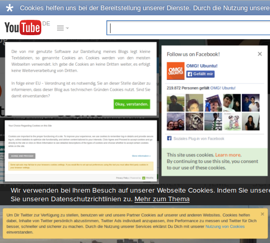

@charak
@charakMit Cookies einverstanden?
Im Grunde ist die Richtlinie 2002/58/EG der Europäischen Gemeinschaft sehr positiv für den Datenschutz. Sie regelt zum Beispiel, dass man automatischen Werbe-Anrufen oder -Mails vorher zustimmen muss (Artikel 13 §1). Eine dieser Vorschriften sorgt allerdings dafür, dass Internetnutzer, die sich um ihre Privatsphäre sorgen, eher gegängelt werden: die Warnung vor Cookies.
Er ist gut gemeint, der Hinweis mit dem Websites ihre Nutzer erst um Erlaubnis fragen, bevor sie in deren Browser einen Cookie ablegen. Schließlich lässt sich über solche kleinen Textschnippsel feststellen, wie oft ein Besucher vorbeikommt, was er sich ansieht oder sogar, welche Seiten er sonst noch besucht.
In der Praxis sehen Cookie-Warnungen dann zum Beispiel so aus:

Die Hinweise stehen oft in schmalen Leisten am oberen oder unteren Rand der Seite. Deutlich auffälliger ist es, wenn sich die Cookie-Warnung als Overlay über die gesamte Website liegt (Beispiel bei der Open-Source-Gemeinschaft SourceForge). Man kann erst dann auf die Inhalte zugreifen, wenn man sich mit den Cookies einverstanden erklärt hat. Hat man sein Einverständnis dann gegeben, wird das im eigenen Browser gespeichert und zwar, nun ja, als Cookie. Das ist technisch der einfachste (und einzig praktikable?) Weg.
Cookies verwalten? Mach ich schon selbst!
Dabei kann doch schon seit über 15 Jahren jeder Internetnutzer selbst bestimmen, ob er Cookies akzeptiert. Bereits im Internet-Explorer 4 (erschien im September 1997) konnte man einstellen, ob eine Seite Datenkrümel im Browser speichern darf oder nicht. Heute kann man sogar genau festlegen, welche Websites Cookies setzen dürfen und wie lange – und das ganz ohne Hinweisbanner.
Anleitungen für unterschiedliche Browser, wie man den Umgang mit Cookies einstellt: Firefox, Chrome, Internet Explorer (rechts oben Version auswählen), Safari (Mac), Safari (mobil).
Ich persönlich akzeptiere Cookies beim Surfen, habe aber eingestellt, sie bis auf zwei Ausnahmen wieder zu löschen, sobald ich meinen Browser schließe. So verhindere ich, dass Websites mein Verhalten auf längere Zeit verfolgen können, kann aber trotzdem Funktionen nutzen, die Cookies benötigen (z. B. Warenkorb, Anmeldung, temporäre Merkzettel).
Technische Umsetzung: mangelhaft
Und hier ist das Problem: Aufgeklärte Nutzer, die Ihre Cookies selbst verwalten (und löschen), bekommen die nervigen Cookie-Hinweise jedes Mal wieder angezeigt – denn der Einverständnis-Cookie wird ja auch immer wieder gelöscht. Wer sich dagegen überhaupt nicht mit Cookies beschäftigt, hat nach einem Mal wegklicken auf ewig seine Ruhe.
So wie die Richtlinie im Augenblick umgesetzt ist, erreicht sie genau das Gegenteil dessen, was sie beabsichtigt. Anstatt dafür zu sorgen, dass Internetnutzer sich bewusst mit Datenschutz beschäftigen, müssen wir nun eine weitere unerwünschte Meldung wegklicken, die wir sowieso nicht lesen (und das immer wieder, wenn wir uns bereits um unsere Privatsphäre kümmern).
Eine alternative Umsetzung wäre gewesen, einen Cookie erst mal zu setzen ohne den Nutzer darüber zu informieren. Erst wenn der Cookie dann ausgelesen wird, muss ein Hinweis angezeigt und ein Einverständnis- bzw. Ablehnungs-Cookie gespeichert werden. Dazu müsste das Gesetz aber festlegen, dass nicht das Setzen, sondern das erneute Auslesen eines Cookies in die Privatsphäre eingreift und erst darüber informiert werden muss.
Meine Übergangslösung
Mit meinen jetzigen Cookie-Einstellungen bin ich sehr zufrieden und möchte sie auch nicht ändern. Um die lästigen Warnungen trotzdem nicht immer wieder angezeigt zu bekommen, verwende ich einen Werbeblocker, den ich mit meinen eigenen Filtern füttere (gegen unaufdringliche Werbung habe ich grundsätzlich nichts, deshalb habe ich keine vorgefertigte Filterliste abonniert). Meine Filter sind unter anderem diese:
youtube.com##div[class*="cookie-alert"]
twitter.com##div[class*="cookie-notice"]
arte.tv##div[class*="cookie-banner"]
omgubuntu.co.uk##div[class="entry-share"]
##div[id="cookiewarning"]
||truste.com*.js*
(Der vorletzte Filter blockiert ein Wordpress-Plugin; der letzte einen Datenschutzservice, der ein Skript für eine Overlay-Warnung anbietet.)
Ich bin gespannt, ob sich eine andere technische Umsetzung irgendwann etabliert, oder ob wir in Zukunft noch mehr solche gut gemeinten Einblendungen angezeigt bekommen.
---
Rubrik(en):
#kritik